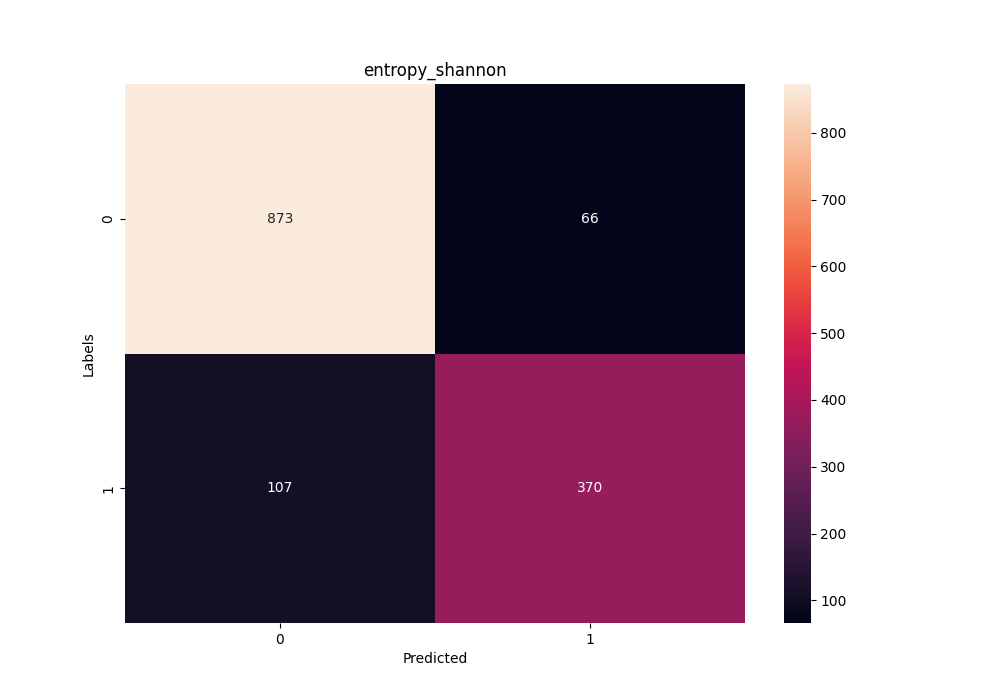

Step 1: Collect data
Positive sample
First, to gather data to collect all the snoRNAs C/D box and H/ACA box samples, the RFAM
database will be used as reference to get all the families of each snoRNA class. In their
current webpage, it has an API reference to connect to the MYSQL
database with the user rfamro with host mysql-rfam-public.ebi.ac.uk
mysql --user rfamro --host mysql-rfam-public.ebi.ac.uk --port 4497 --database Rfam
SHOW DATABASES;
USE family;
SHOW TABLES;
SELECT rfam_id, type, description FROM family WHERE type LIKE '%snoRNA%';
The idea is to get the RFAM_ID to get the fasta format file to use the genetic content of
nitrogenous bases as characteristics of the family. The query it will only accept snoRNAs of class C/D
box and H/ACA box, so it is necessary to filter the
TYPE column and output that query to a file specified by the class itself.
SELECT rfam_id FROM family WHERE type like '%snoRNA; CD-box%' INTO OUTFILE 'cd-box';
SELECT rfam_id FROM family WHERE type like '%snoRNA; HACA-box%' INTO OUTFILE 'haca-box';
Remember that this families are the positives samples for the classifier. The negative sample will be
explained how it was built and how it managed to deal with overfitting issues.
A simple shell script was created to automatically download all sequences
of each family from the RFAM FTP
Site Directory, defining the file name based on the rfam_id name with the format of the
fasta extension, which is the standard extension format representation of nucleotide sequences. Each
file was assigned to the folder with the name of your snoRNA class inside the positives folder.
for $file in $(ls positives/); do curl http://http.ebi.ac.uk/pub/databases/Rfam/CURRENT/fasta_files/$file.fa.gz -O; done;
for $file in $(ls fasta/); do gzip -d $file.gz; done;
In total, 4877 C/D box snoRNA sequences were obtained from 475
families and 2813 H/ACA box snoRNA sequences among 283 families for the positive set
of data.
Negative sample
It is necessary the negative set to train and test the classification model to be
generated, then, the elaboration of the negative set had as a fundamental rule
that 50% of the set would be created by sequences generated randomly by a
shuffling as the other half would be formed by genetic sequences of RNAs
such as Ribonuclease (RNase) P, 5S ribosomal RNA (rRNA) and transfer RNA (tRNA),
considering that the maximum size delimited for the negative set would be three times larger
than the positive set. The same idea aplied before was used here: gathering data from MYSQL
RFAM
database, save the output to a file and them make requests calls to RFAM FTP Site to get the fasta
content of each RFAM_ID.
The effort to build the negative set not only used differente RNAs classes but an shuffle
algorithm was implement providing a total of 4999 sequences, 2433 of which were RNA sequences not
belonging to
snoRNAs and
2566 random sequences.
# A simple shuffle algorithm
# It mix up the nitrogenous bases to create random genetic sequences.
def shuffle(sequence, times, order):
seq = sequence
sequences = []
for i in range(times):
kmers = [seq[i:i + order] for i in range(0, len(seq), order)]
random.shuffle(kmers)
seq_out = ''.join(kmers)
sequences.append(seq_out)
return sequences
Step 2: Data preprocessing
Using the families as a basis for calculation and construction of the positive set, the
85% percentile of the data, the arithmetic mean, the variance, and the maximum and minimum value of the
quantities of sequences as expressed in the table below.
Positive Dataset Metrics.
| Class |
Sequences |
Families |
Percentile |
Mean |
Variance |
Max |
Min |
| C/D box |
4877 |
475 |
6 |
4 |
2.5589 |
7 |
2 |
| H/ACA box |
2813 |
283 |
22 |
5 |
27884.03 |
76 |
2 |
The calculation metrics are balanced through the arithmetic mean and the number of expected sequences
per family so that the machine learning algorithm consumes them in
equivalent grouping. Thus, when presetting this condition, 1553 sequences remained
of C/D box and 1013 H/ACA box sequences to compose the positive dataset.
According to the pre-established condition in the negative dataset, 1500 randomly generated sequences
were obtained and
1666 sequences made up of the mixture of RNase P, 5S rRNA and tRNA, totaling 3166
sequences in the negative dataset.
Step 3: Extraction
The feature extraction methods used are mathematical in nature as
the numerical mapping with the Fourier transformations (Real, Z-curve), the entropies of
Shannon and Tsallis and complex networks. All feature extraction algorithms
can be extracted from BONIDIA
et. al. (2021)
The creation of scripts in the extraction stage was essential for automating activities
repetitive tasks in terms of efficiency and speed as it facilitated the adjustment of parameters for the
extraction algorithms, the organization of data input and output into files (mainly
to those that contained the fasta format in their extension) and the parallel execution of the
algorithms
to speed up the data extraction and grouping phase.
# A bash script that verify what extraction method the user
# passes as argument.
extract() {
local group=$1
local method=$2
local fourier_number=$3
local entropy_choice=$3
local algorithm
local output_directory
case $method in
"complex")
if [ $group = 'cdbox' ]; then
for file in $CD_BOX_DIRECTORY; do
archive=$(echo -e $file | cut -f3 -d "/" | cut -f1 -d ".")
python3 $COMPLEX_ALGORITHM -i $file -o $OUTPUT_CDBOX_EXTRACT_COMPLEX_DIRECTORY/$archive.csv -l cdbox -k 3 -t 10 1>/dev/null
echo -e "Negative sample\t$group\t$method\t$archive.csv\n"
done
elif [ $group = 'hacabox' ]; then
for file in $HACA_BOX_DIRECTORY; do
archive=$(echo -e $file | cut -f3 -d "/" | cut -f1 -d ".")
python3 $COMPLEX_ALGORITHM -i $file -o $OUTPUT_HACABOX_EXTRACT_COMPLEX_DIRECTORY/$archive.csv -l hacabox -k 3 -t 10 1>/dev/null
echo -e "Extracting...\t$group\t$method\t$archive.csv"
done
elif [ $group = 'negative' ]; then
archive="negative_complex"
python3 $COMPLEX_ALGORITHM -i $NEGATIVE_FILE -o $OUTPUT_CDBOX_NEGATIVE_EXTRACT_COMPLEX_DIRECTORY/$archive.csv -l negative -k 3 -t 10 1>/dev/null
python3 $COMPLEX_ALGORITHM -i $NEGATIVE_FILE -o $OUTPUT_HACABOX_NEGATIVE_EXTRACT_COMPLEX_DIRECTORY/$archive.csv -l negative -k 3 -t 10 1>/dev/null
echo -e "$group\t$method\t$archive.csv"
elif [ $group = 'real' ]; then
for file in $REAL_DATA_DIRECTORY; do
archive=$(echo -e $file | cut -f3 -d "/" | cut -f1 -d ".")
python3 $COMPLEX_ALGORITHM -i $file -o $OUTPUT_REAL_DATA_COMPLEX_DIRECTORY/$archive.csv -l real -k 3 -t 10 1>/dev/null
echo -e "Extracting...\t$group\t$method\t$archive.csv"
done
else
echo -e "Unrecognized group of snoRNAs."
exit 0
fi
;;
# ...
}
The extraction returned a file in csv format covering the columns with the characteristics found in each
family by the algorithms. It is worth noting that these data are purely
continuous, therefore, it is possible for there to be infinite values that are not numeric. It is
important to have
the awareness of this property of the data because later there will be a treatment around these
values in the classifier pre-execution stage.
Step 4: Training and Testing
The training and testing set was divided such that 70% of the original set was
for training while the remaining 30% remained for the test set and these values were
passed to the train_test_split function provided by the sklearn.model_selection package in
Python.
In training without cross-validation, there is a parameter called test_size responsible for
establish the number of iterations that the training algorithm will perform so that in the end it can
evaluate which of these output models had the best benefit. On the other hand, in training
with cross-validation, the n_estimators parameter designates the proportion of models in a
single execution of the algorithm in order to obtain the best estimator among the evaluated portion
supported by evaluation metrics.
The Random Forest classification algorithm was chosen because it was a
promising algorithm in literary review whose generalization was tested
in different classification tasks for long non-coding RNAs (lncRNAs) from
unbalanced data.
class snoRNAs():
# ...
def train(self):
for key, value in self.extraction_methods.items():
for _ in range(self.test_counter):
initial_time = time.time()
X, y = value.get_XY()
X_train, X_test, y_train, y_test = train_test_split(X, y, test_size=0.3)
clf = RandomForestClassifier(max_depth=10)
clf.fit(X_train, y_train)
predictions = clf.predict(X_test)
self.evaluation.append((value.group, value.method, clf, f1_score(y_test, predictions), y_test))
plot_graph(value, y_test, predictions, self.cm_arr)
self.f1_scores.append(str(f1_score(y_test, predictions) * 100.0) + "%")
self.fbeta_scores.append(
str(fbeta_score(y_test, predictions, beta=0.5) * 100.0) + "%"
)
self.recalls.append(str(recall_score(y_test, predictions) * 100.0) + "%")
self.precisions.append(
str(precision_score(y_test, predictions, average="macro") * 100.0) + "%"
)
self.auc.append(str(roc_auc_score(y_test, predictions) * 100.0) + "%")
self.labels.append(value.group)
self.methods.append(key)
end_time = time.time()
self.measure_time.append(str(end_time - initial_time) + "s")
group, method, clf, y_test = self._evaluate_model(self.evaluation)
model_file = f"{group}_{method}_{self.datetime_str}.pickle"
save_model(model_file, clf)
self.test(y_test, model_file, group, method)
self.evaluation.clear()
deviation = dp(self.cm_arr)
avg = average(self.cm_arr)
self.standard_deviations.append(
{"class": value.group, "method": value.method, "deviation": deviation}
)
self.averages.append({"class": value.group, "method": value.method, "average": avg})
def test(self, y_test, model_file, group, method):
path = f'./models/{model_file}'
model = load_model(path)
real_valid = CSVData(group, method)
out_file = f"./output/validation/validation_{self.datetime_str}.csv"
content = ""
if not path.isfile(out_file):
content = f'classe,metodo,organismo,positivos,negativos,total,modelo,eficiencia\n'
f = open(out_file, "w")
else:
f = open(out_file, "a+")
for org in self.list_organisms_real_data:
X = real_valid.get_X(org)
prediction = model.predict(X)
pos = 0
neg = 0
total = 0
for i in prediction:
if i == 1:
pos += 1
else:
neg += 1
total = pos + neg
content += f'{group},{method},{org},{pos},{neg},{total},{model_file},{pos/total}\n'
f.write(content)
f.close()
The tuning hyper-parameters used in Random Forest for each extraction method
characteristics are shown in the table below:
Random Forest Hyperparameters without using the GridSearchCV function.
| Parameters |
Value |
| "bootstrap" |
true |
| "ccp_alpha" |
0.0 |
| "class_weight" |
None |
| "criterion" |
gini |
| "max_depth" |
10 |
| "max_features" |
sqrt |
| "max_leaf_nodes" |
None |
| "max_samples" |
None |
| "min_impurity_decrease" |
0.0 |
| "min_samples_leaf" |
1 |
| "min_samples_split" |
2 |
| "min_weight_fraction_leaf" |
0.0 |
| "n_estimators" |
100 |
| "n_jobs" |
None |
| "oob_score" |
false |
| "random_state" |
None |
| "verbose" |
0 |
| "warm_start" |
false |
To automate this hyperparameter tuning process, the function
GridSearchCV from the sklearn module in Python. The primary objective of GridSearchCV is to create
of parameter combinations from an exhaustive search over specified values for
an estimator (score, that is, evaluation metric), to later evaluate them.
The estimator parameters used to apply these methods are optimized and refined
by cross-validation over a grid of parameters.
class snoRNAs():
# ...
def train_with_cv(self):
space = dict()
space['n_estimators'] = [10, 100, 500]
for key, value in self.extraction_methods.items():
initial_time = time.time()
X, y = value.get_XY()
X_train, X_test, y_train, y_test = train_test_split(X, y, test_size=0.3)
model = RandomForestClassifier(max_depth=10)
clf_f1 = GridSearchCV(model, space, scoring="f1", refit=True)
clf_precision = GridSearchCV(model, space, scoring="precision", refit=True)
clf_recall = GridSearchCV(model, space, scoring="recall", refit=True)
clf_accuracy = GridSearchCV(model, space, scoring="accuracy", refit=True)
clf_auc = GridSearchCV(model, space, scoring="roc_auc", refit=True)
result_f1 = clf_f1.fit(X_train, y_train)
result_precision = clf_precision.fit(X_train, y_train)
result_recall = clf_recall.fit(X_train, y_train)
result_accuracy = clf_accuracy.fit(X_train, y_train)
result_auc = clf_auc.fit(X_train, y_train)
self.test_with_cv(result_f1.best_estimator_, result_f1.best_score_, "f1", value.group, value.method)
self.test_with_cv(result_precision.best_estimator_, result_precision.best_score_, "precision", value.group, value.method)
self.test_with_cv(result_recall.best_estimator_, result_recall.best_score_, "recall", value.group, value.method)
self.test_with_cv(result_accuracy.best_estimator_, result_accuracy.best_score_, "accuracy", value.group, value.method)
self.test_with_cv(result_auc.best_estimator_, result_auc.best_score_, "auc_roc", value.group, value.method)
predictions = clf_f1.predict(X_test)
plot_graph(value, y_test, predictions, self.cm_arr)
self.f1_scores.append(str(f1_score(y_test, predictions) * 100.0) + "%")
self.fbeta_scores.append(
str(fbeta_score(y_test, predictions, beta=0.5) * 100.0) + "%"
)
self.recalls.append(str(recall_score(y_test, predictions) * 100.0) + "%")
self.precisions.append(
str(precision_score(y_test, predictions, average="macro") * 100.0) + "%"
)
self.auc.append(str(roc_auc_score(y_test, predictions) * 100.0) + "%")
self.labels.append(value.group)
self.methods.append(key)
end_time = time.time()
self.measure_time.append(str(end_time - initial_time) + "s")
def test_with_cv(self, best_model, best_score, score_type, group, method):
real_valid = CSVData(group, method)
out_file = f"./output/validation/{score_type}_{self.datetime_str}.csv"
content = ""
if not path.isfile(out_file):
content = f'classe,metodo,organismo,positivos,negativos,total,eficiencia,{score_type}\n'
f = open(out_file, "w")
else:
f = open(out_file, "a+")
for org in self.list_organisms_real_data:
X = real_valid.get_X(org)
prediction = best_model.predict(X)
pos = 0
neg = 0
total = 0
for i in prediction:
if i == 1:
pos += 1
else:
neg += 1
total = pos + neg
content += f'{group},{method},{org},{pos},{neg},{total},{pos/total},{best_score}\n'
f.write(content)
f.close()
Similar to Random Forest's default hyperparameters, GridSearchCV
applied the following parameters as shown in the table below:
Random Forest hyperparameters after using the GridSearchCV function.
| Parameters |
Value |
| "mean_fit_time" |
array([0.03470263, 0.34155726, 1.70107441]) |
| "std_fit_time" |
array([0.00415981, 0.02498759, 0.14168099]) |
| "mean_score_time" |
array([0.00217724, 0.01229601, 0.04444399])
|
| "std_score_time" |
array([0.0001098 , 0.00510206, 0.01017052]) |
| "param_n_estimators" |
masked_array(data=[10, 100, 500]) |
| "mask" |
array([False, False, False]) |
| "params" |
array([’n_estimators’: 10, ’n_estimators’: 100, ’n_estimators’: 500]) |
| "split0_test_score" |
array([0.98817967, 0.99061033, 0.99061033]) |
| "split1_test_score" |
array([0.98337292, 0.98329356, 0.98337292]) |
| "split2_test_score" |
array([0.98584906, 0.98352941, 0.98352941]) |
| "split3_test_score" |
array([0.98345154, 0.98113208, 0.98113208])
|
| "split4_test_score" |
array([0.98578199, 0.98584906, 0.98578199]) |
| "mean_test_score" |
array([0.98532703, 0.98488289, 0.98488535]) |
| "std_test_score" |
array([0.00178623, 0.00322997, 0.00321846]) |
| "rank_test_score" |
array([1, 3, 2]) |
Step 5: Evalutation
Case studies: classification of snoRNAs in a dataset found in
literature
In the case studies, the operations were divided into N executions and for each execution
evaluation metrics will be checked so that in the testing stage the
best model found for each extraction method.
Training validations involve any validation the model needs
be retrained. Typically, this includes testing different models during a single pipeline.
training. These validations are performed in this training/evaluation phase of model development, and
are often kept as experimentation code, not doing anything else.
part of the final product of the classifier.
The training pipeline starts when loading the predictive model with the best accuracy
on the f1_score score by feature extraction method, two case studies are then done
around the real world dataset like the genome of vertebrates and invertebrates such
such as chickens, flies belonging to the Drosophilidae family, Nematodes from the
Rhabditidae family,
protozoa of the Trypanosomatidae family such as Leishmania, Homo Sapiens and
Platypuses:
- Case Study 1: Add the real dataset according to its respective
class of snoRNAs from the genomes found and use the model to predict this
set.
- Case Study 2: Compare the results obtained by predicting the set of
training by evaluating classifier behavior with references from others
articles that predicted the two classes of snoRNAs (C/D box and H/ACA box)
Before estimating the predictive model, in case studies in which a
cross validation, the training run divides the set into training and testing data
in different parts of the model in a way that validates the performance of each model on a given
interval, ensuring the generalization of the data presented among the best parameters
found.
The calculation of hits and errors is done using the confusion matrix that shows the frequencies
classification for each class of snoRNAs. The matrix leads us to a brief analysis of the
estimates even if it has not been included in an evaluation metric.

Confusion matrix in the training stage using the Shannon Entropy method
for the C/D box class of snoRNAs.
Which can be interpreted and created by code as follow:
def get_cm(obj, y_test, predictions, tp_arr):
cm = confusion_matrix(y_test, predictions)
tn, fp, fn, tp = cm.ravel()
tp_arr.append(
{
"class": obj.group,
"method": obj.method,
"tn": tn,
"fp": fp,
"fn": fn,
"tp": tp,
}
)
print(f"{COLORS.BOLD}[DEBUG] {COLORS.SUCCESS}{obj.group}\t{obj.method}\t{cm.ravel()}{COLORS.ENDC}")
return cm